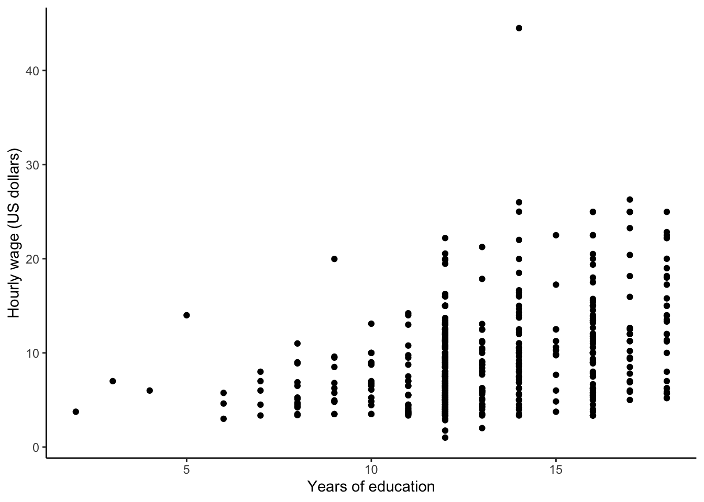
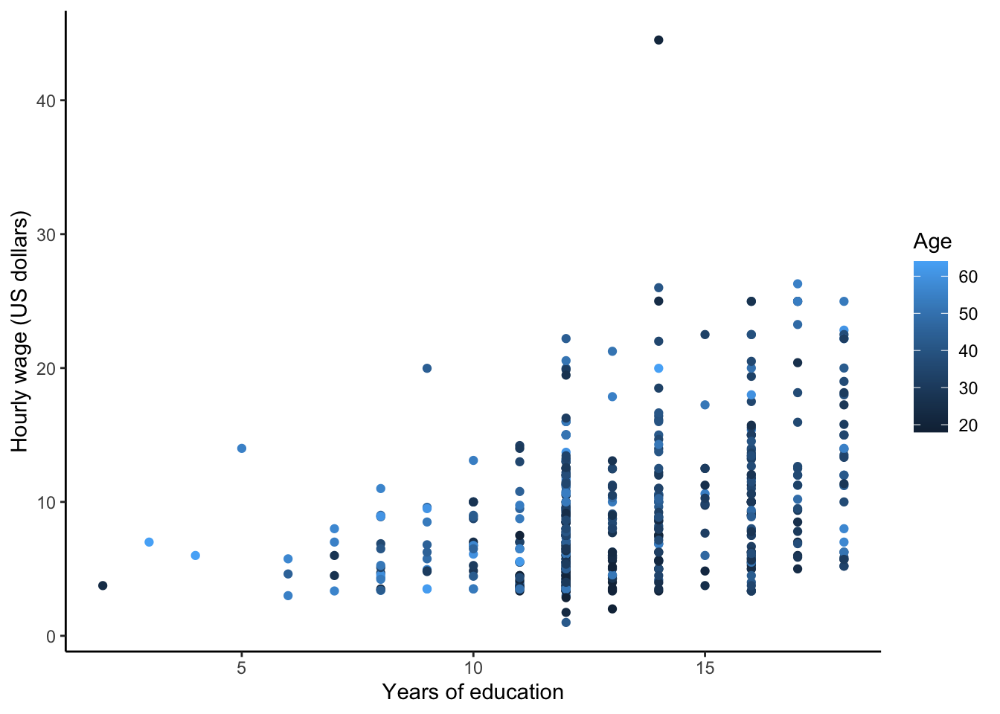
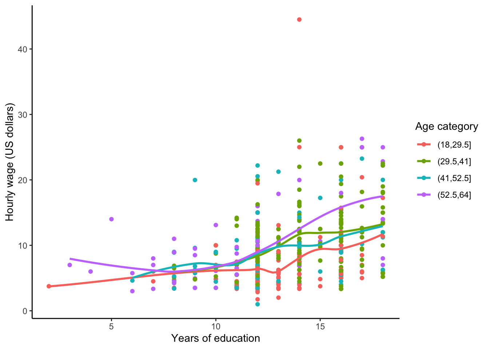
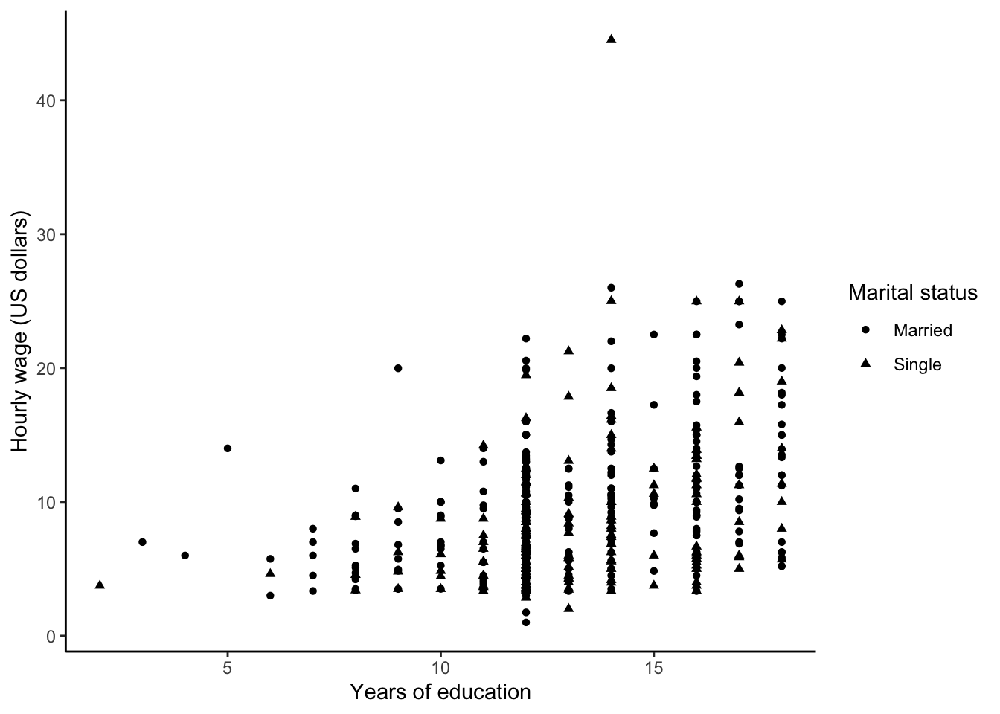
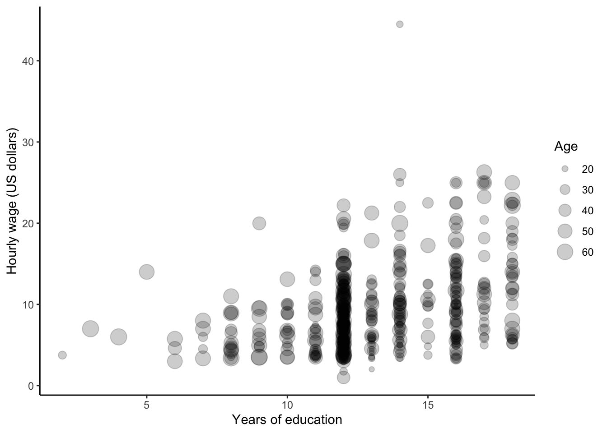
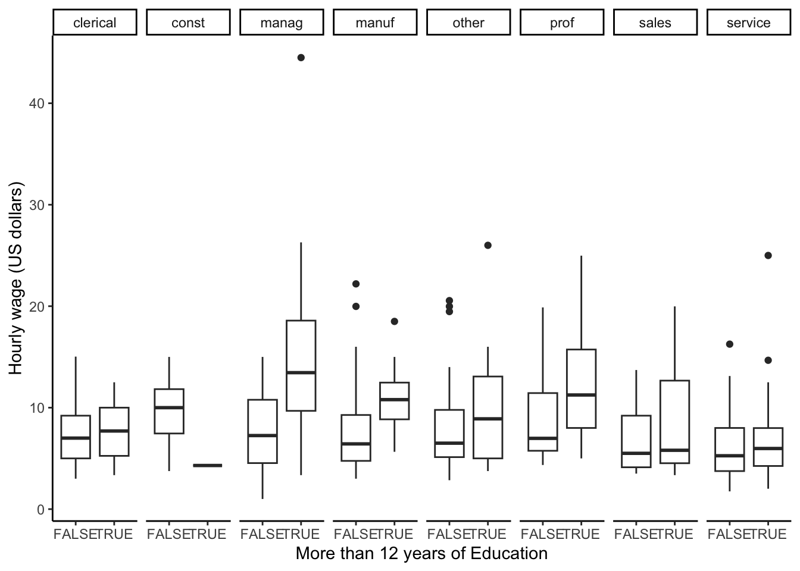
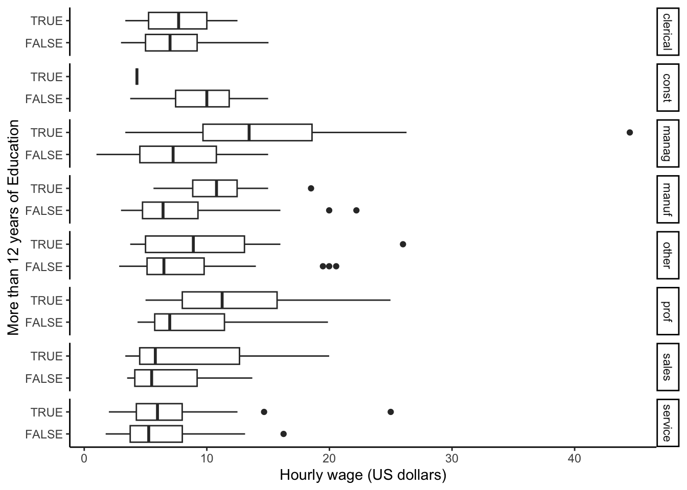
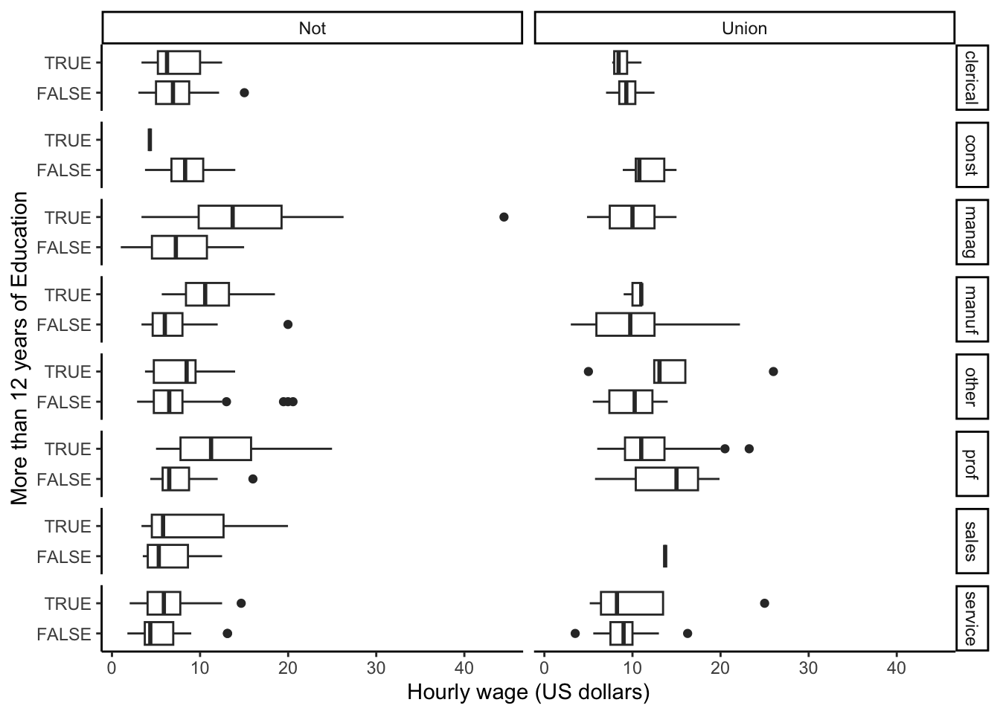
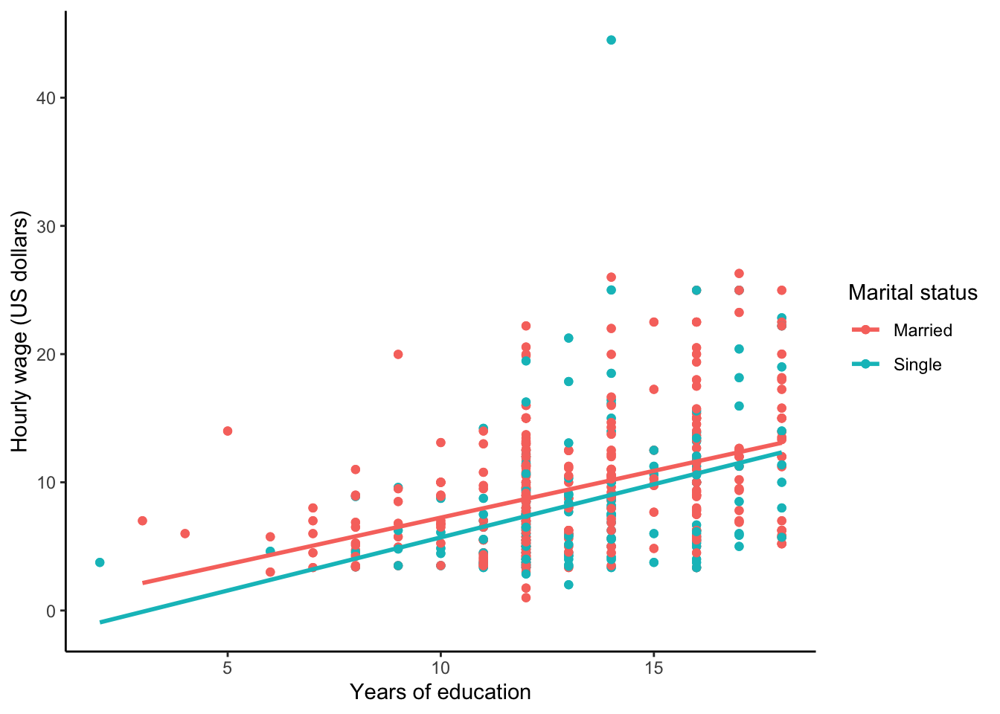
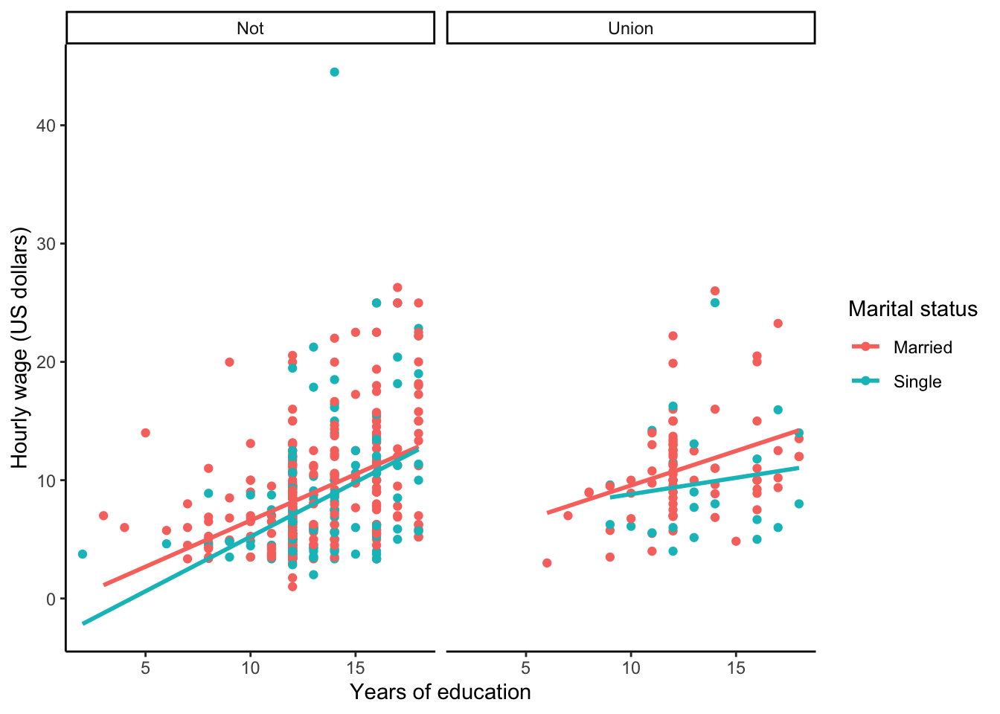

2.9 Three or more variables
In complex data sets that contain many variables, it is necessary to get a fuller understanding of the relationships in the data than we can see with plots that look at only one or two variables.
The following visual features can help us turn bivariate plots into multivariate plots:
- Color of points and lines
- Shape of points
- Size of points
- Panels (facets)
Let’s look at another data set, the 1985 Current Population Survey. This is a smaller scale survey administered by the United States government in the intervening years of the decennial census.
2.9.1 A bivariate scatterplot
Our primary interest is the wage variable which gives the hourly wage for each individual in the data set in US dollars. What is the relationship between years of education and hourly wage?
data(CPS85) # Load the data from the R package CPS85
CPS85 %>%
ggplot(aes(x = educ, y = wage)) +
geom_point() +
labs(x = "Years of education", y = "Hourly wage (US dollars)") +
theme_classic()
We can see that years of education and hourly wage are positively correlated. What about the impact of other variables?
2.9.2 Enriching with color
We can enrich this bivariate scatterplot by showing additional information via color.
CPS85 %>%
ggplot(aes(x = educ, y = wage, color = age)) +
geom_point() +
labs(x = "Years of education", y = "Hourly wage (US dollars)", color = "Age") +
theme_classic()
Adding color for a quantitative variable, age, does not reveal any obvious patterns; that is, we don’t see obvious clustering by color. Perhaps this is because there are too many colors (remember Visualization Principle #6: Use Color Appropriately). Are any patterns revealed if we use 4 age categories instead?
CPS85 %>%
mutate(age_cat = cut(age, 4)) %>%
ggplot(aes(x = educ, y = wage, color = age_cat)) +
geom_point() +
geom_smooth(se = FALSE) +
labs(x = "Years of education", y = "Hourly wage (US dollars)", color = "Age category") +
theme_classic()
With 4 age categories, no age patterns are evident, but this does help us see that the least educated people in this data set are mostly in the youngest and oldest age categories.
2.9.3 Enriching with shape
We can also encode information via point shape. Here we let shape encode marital status.
CPS85 %>%
ggplot(aes(x = educ, y = wage, shape = married)) +
geom_point() +
labs(x = "Years of education", y = "Hourly wage (US dollars)", shape = "Marital status") +
theme_classic()
Often encoding information with color is preferable to encoding it with shapes because differences in shapes are not as easily discernible. Remember that statistical visualizations are meant to help you better understand your data. If you are having trouble easily picking out patterns when using a certain visual feature (e.g. shape, color), try another feature to see if the clarity of the plot increases for you.
2.9.4 Enriching with size
The size of a point is useful for conveying the magnitude of a quantitative variable. For example, we may wish to see non-categorized age information with point size.
CPS85 %>%
ggplot(aes(x = educ, y = wage, size = age)) +
geom_point(alpha = 0.2) + #alpha specifies the level of transparency of the points
labs(x = "Years of education", y = "Hourly wage (US dollars)", size = "Age") +
theme_classic()
2.9.5 Enriching with panels
Panels (or facets) are a great way to see how relationships differ between levels of a single categorical variable or between combinations of two categorical variables.
Let’s look at the relationship between hourly wage and years of education across job sectors. The following creates a row of plots of this relationship over job sectors.
CPS85 %>%
mutate(MorethanHS = educ > 12) %>%
ggplot(aes(x = MorethanHS, y = wage)) +
geom_boxplot() +
labs(x = "More than 12 years of Education", y = "Hourly wage (US dollars)") +
facet_grid(. ~ sector) +
theme_classic()
With a small change in notation (sector ~ . versus . ~ sector) and flipt the coordinates, we can create a column of plots.
CPS85 %>%
mutate(MorethanHS = educ > 12) %>%
ggplot(aes(x = MorethanHS, y = wage)) +
geom_boxplot() +
coord_flip() +
labs(x = "More than 12 years of Education", y = "Hourly wage (US dollars)") +
facet_grid(sector ~ .) +
theme_classic()
We can also create panels according to two categorical variables. How do the relationships additionally differ by union status?
CPS85 %>%
mutate(MorethanHS = educ > 12) %>%
ggplot(aes(x = MorethanHS, y = wage)) +
geom_boxplot() +
coord_flip() +
labs(x = "More than 12 years of Education", y = "Hourly wage (US dollars)") +
facet_grid(sector ~ union) +
theme_classic()
2.9.6 Enriching with smoothing
If we have a scatterplot, we may want to get an understanding of the overall relationship between x and y within subsets. We can add geom_smooth(method = 'lm', se = FALSE) to estimate and plot the linear relationships.
CPS85 %>%
ggplot(aes(x = educ, y = wage, color = married)) +
geom_point() +
geom_point() +
geom_smooth(method = 'lm', se = FALSE) +
labs(x = "Years of education", y = "Hourly wage (US dollars)", color = "Marital status") +
theme_classic()
2.9.7 Putting everything together
The combination of these different visual features can result in powerful visual understanding. Let’s combine paneling with color information to explore if there are marital status patterns between union or not union job subgroups.
CPS85 %>%
ggplot(aes(x = educ, y = wage, color = married)) +
geom_point() +
geom_smooth(method = 'lm', se = FALSE) +
labs(x = "Years of education", y = "Hourly wage (US dollars)", color = "Marital status") +
facet_grid(. ~ union) +
theme_classic()
Creating effective multivariate visualizations takes a lot of trial and error. Some visual elements will better highlight patterns than others, and often times, you’ll have to try several iterations before you feel that you are learning something insightful from the graphic. Be tenacious, and keep in mind the good visualization principles outlined at the beginning of this chapter!